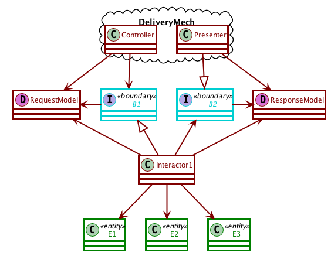
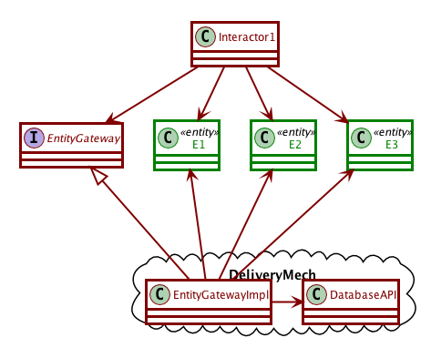

Activity 9-1 Use-case architectures
Following along with video 7: Architecture
- The architecture of a system should be based on its use cases.
- A use case is a formal description of the way a user interacts with the system in order to achieve a certain goal, phrased in a delivery-independent way.
- Architecture allows you to defer decisions (like databases and GUIs).
31:32-40:20 use cases
40:20-46:12 partitioning
Components of use-case architectures
Use case architecture is composed of 3 kinds of objects:
- Entities
- are “business objects”. They carry application-independent business rules about the elements of our system. Its methods should be useful to all applications that might need this kind of object, but no methods that are specific to the application.
- Interactors
- are “use case objects”. They carry all the application-dependent business rules, and their methods are specific to the application we are working on.
- Boundaries
- are “user interface objects”. They separate the use cases from the delivery mechanism and provide a communications pathway between the two sides.
Methods in the interactors implement their tasks by calling application-independent methods in the entities and manipulating entities according to their use case.
Interacting with the user
- The delivery mechanism prepares a request from the user in a canonical form,
- passes it through the boundary to the interactor,
- which invoke the application-specific business rules and manipulate the entity objects,
- then compute the result and wrap it into a result model, which is then passed back to the delivery mechanism via another boundary object.

Model/View and use cases
46:12-52:45 isolation
Interacting with the database
52:45-57:12 database
